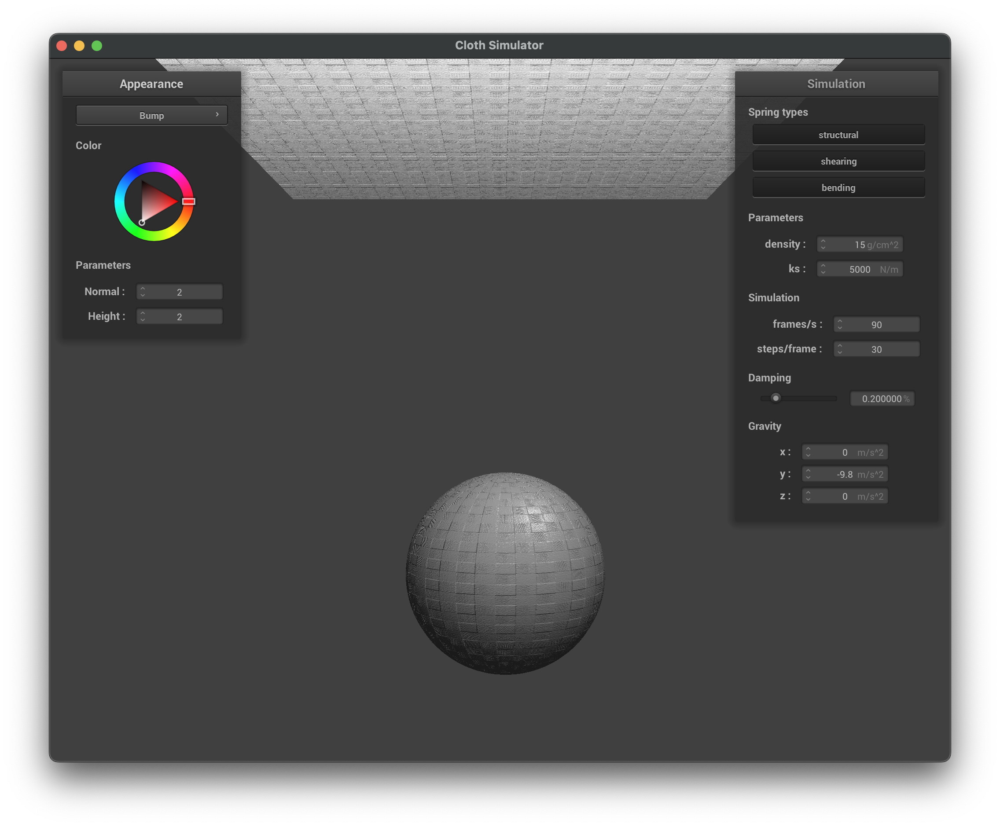

CS 184: Computer Graphics and Imaging, Spring 2023
Project 4: Cloth Simulator
Atharva Patil, May Liu CS184-Project 4
https://cal-cs184-student.github.io/project-webpages-sp23-patilatharva/proj4/index.html
Overview
In this project, we have implements cloth simulation. We started from simulating the spring and mass quality of the spring, and
moved on to deriving the acceleration of the cloth from the spring mass quality. We then implemented collision detection, including
both collision with external objects and internal collision. Lastly, we implemented a couple of shading programs. Overall, the project
was challenging but also very fun. It helped up establish a better understanding of the different components within cloth simulation, and how
these different components interact with each other.
Part I: Masses and springs
For this part, we have implemented the Cloth::buildGrid() function in cloth.cpp, which builds the cloth by assuming that it is
a grid made out of springs connected by a bunch of vertex pairs. First, give the width, height, and number of required vertices,
we built the basic structure of the grid. In the meantime, we also made sure to set the "pinned" parameter of the vertices
to true if the vertices are required to be pinned. Next, we set up the structural, shearing, and bending constraints between
vertices in order to ensure that the grids are stable and behaves like cloths. Here are some screenshots of the result of our implementation:
|
scene/pinned2.json from a viewing angle
|
scene/pinned2.json from a slightly different viewing angle
|
Show us what the wireframe looks like (1) without any shearing constraints, (2) with only shearing constraints, and (3) with all constraints.
|
scene/pinned2.json without any shearing constraints
|
scene/pinned2.json with only shearing constraints
|
|
scene/pinned2.json with all constraints
|
Part II: Simulation via numerical integration
After implementing the basic grid, we moved on to part 2, where we used the spring-grid system to generated acceleration,
so that when the grid moves, it will move like an actual cloth. The function we implemented is Cloth::simulate(). First, we looped through all the universal forces give in the parameters
of the functions, accumulated them before applying the accumulated force on each vertex inside the grid. We then computed the
correctional force for each spring inside the grid so that it has the tendency to fall back to its resting length. After applying the forces,
we want to estimate the acceleration and ultimately the position of all the unpinned point mass in the next time step, using the force we earlier calculated.
The method we used was called Verlet integration, which gives a relatively accurate estimation of the next positions.
For the deliverable of this part, we will be rendering scene/pinned2.json. We will observe the effect of changing different parameters in
how the cloth is rendered. For starter, here is a rendering of the cloth at resting state with default parameter values:
 Default values: ks = 5000, density = 15, damping = 0.2
Default values: ks = 5000, density = 15, damping = 0.2
|
How we will be altering the ks value to see how that affect the cloth rendering. When we set ks to a low value of 5 and the rest of the
parameters to default, the cloth gets a lot more droopy as shown from the image below:
|
Default values: ks = 5, density and damping remains default
|
When we set ks to a high value of 50000 and the rest of the parameters to default, the cloth gets a lot
more stiff and has an almost paper-like quality. Here is an image of the rendering:
|
Default values: ks = 50,000, density and damping remains default.
|
Now let's proceed to changing the density of the cloth. When we lower to density to 1, the cloth feels a lot lighter.
As a result, the arc caused by the cloth falling in gravity is less curved. Here is an image:
 Default values: density = 1, density and damping remains default.
Default values: density = 1, density and damping remains default.
|
When we raise to density to 100, the cloth appears to be a lot heavier.
As a result, the arc caused by the cloth falling in gravity is more curved. Here is an image:
|
Default values: density = 100, density and damping remains default.
|
Lastly, we examine the effect of different damping rate on the cloth rendering. When we turn off damping completely by setting it to 0,
the cloth swings and bounces back and forth. Here is a screenshot we took while the cloth was bouncing:
|
Default values: damping = 0, density and damping remains default.
|
When we turn damping up all the way to 1, the cloth does not bounce and swing at all while it's falling. Here is a screenshot we took
while the cloth was falling due to gravity. As we can see, the cloth was very straight:
|
Default values: damping = 1, density and damping remains default.
|
Part III: Handling collisions with other objects
Overview/Problems encountered.
Given a point mass's current and previous position, we check if it has
passed through the surface of a sphere or a plane using simple line equations
+ algebra. If it has, calculate its "tangent point", i.e., the point where
it should have intersected the surface of the other object. Then, we
determine the correction vector, the vector indicating the force that needs
to be applied to the point mass to bring it to its tangent point. Finally,
we update the point mass's position by adding the correction vector scaled
down by friction.
Show us screenshots of your shaded cloth from scene/sphere.json in
its final resting state on the sphere using the default ks = 5000 as
well as with ks = 500 and ks = 50000. Describe the differences in the
results.
|
Default values: ks = 5000, density = 15, damping = 0.2
|
ks = 500, density = 15, damping = 0.2
|
|
ks = 50000, density = 15, damping = 0.2
|
When the spring constant ks is low, the cloth becomes more flexible and
drapes around the sphere easily. On the other hand, when ks is high,
the cloth is stiff and resists the force of gravity and keeps more of
its original shape.
Show us a screenshot of your shaded cloth lying peacefully at rest
on the plane.
|
scene/plane.json with Phong shading.
|
Part IV: Handling self-collisions
Overview/Problems encountered.
We started by encoding each point mass into groups according to their
location-specific hash. Then, during each iteration, for every point mass, we loop over the map
and check if another point mass (except itself) lies within a certain distance apart.
If they are, we apply a correction force so they are pushed apart. Once we are done looping,
we take the average of all these correction forces and apply it to the current point mass.
Show us at least 3 screenshots that document how your cloth falls and
folds on itself, starting with an early, initial self-collision and
ending with the cloth at a more restful state (even if it is still
slightly bouncy on the ground).
|
Initial state
|
Progress
|
|
Progress
|
Progress
|
|
Rest state
|
Changes in the density as well as ks affect how much the cloth bends when it
crumples upon itself - how spread out it is when it comes to rest.
Part V: Shader
Explain in your own words what is a shader program and how vertex and
fragment shaders work together to create lighting and material effects.
Vary the density as well as ks and describe with words and screenshots
how they affect the behavior of the cloth as it falls on itself.
A shader program is a program that gives a rendering object its color, material, texture, and surface layer patterns. It does so
by using the mathematical equations that represents how lights are reflected on the object, which have specific material and texture parameters
that these equations can leverage. Within a shader program, there are two types of shaders, called vertex shader and fragment shader.
A vertex shader returns the information of a vertex, including attributes such as its position and normals. The output of the vertex shader goes into
the input of a fragment shader, which uses the information of the vertex to calculate the color, texture of the fragment (here, we can equate fragment as pixel).
Explain the Blinn-Phong shading model in your own words. Show a screenshot of your Blinn-Phong shader outputting only the ambient component, a screen shot only outputting the diffuse component, a screenshot only outputting the specular component, and one using the entire Blinn-Phong model:
Blinn-Phong shading is a mathematical model that simulates the material of objects in computer graphics. Usually it's able to render objects
that has a glossy material. It uses information of the light angle, the surface normal, and the viewing angle to calculate the specular highlights,
diffuse reflection, and ambient lighting at every pixel of the object. Here is an output of the Blinn-Phong shader we implemented:
Show a screenshot of your texture mapping shader using your own custom texture by modifying the textures in /textures/.
Show a screenshot of bump mapping on the cloth and on the sphere. Show a
screenshot of displacement mapping on the sphere. Use the same texture for
both renders.
|

Bump mapping - initial state
|
Bump mapping - rest state
|
|
Displacement mapping - initial state
|
 Displacement mapping - rest state
Displacement mapping - rest state
|
Texture used is texture 4.
Compare the two approaches and resulting renders in your own words.
Bump mapping is a technique to modify the normal vectors of an object such
that the shader gives the appreance of bumps or other details, without
actually rendering it in 3D. This is done by computing local space normal using
dU and dV, i.e. small differences in the u and v vectors.
On the other hand, displacement mapping builds upon bump mapping that truly
displaces the 3D coordinates of vertices according to the height map, towards
the direction of model space vertex normal scaled by the u_height_scaling.
Compare how your the two shaders react to the sphere by changing the
sphere mesh's coarseness by using -o 16 -a 16 and then -o 128 -a 128.
|
Bump mapping: -o 16 -a 16
|
Displacement mapping: -o 16 -a 16
|
 Bump mapping: -o 128 -a 128
Bump mapping: -o 128 -a 128
|
Displacement mapping: -o 128 -a 128
|
Commentary: With an increase in the vertical and horizontal resolution of the
rendered spheres, bump mapping shows more consistent surface and reflection
patterns and less jaggies in the rendering. As for displacement mapping,
the physical bumps (height differences) become more intricate, resulting
in smoother and more consistent bumps, as well as the same surface resolution
improvements as bump mapping.
Show a screenshot of your mirror shader on the cloth and on the sphere.